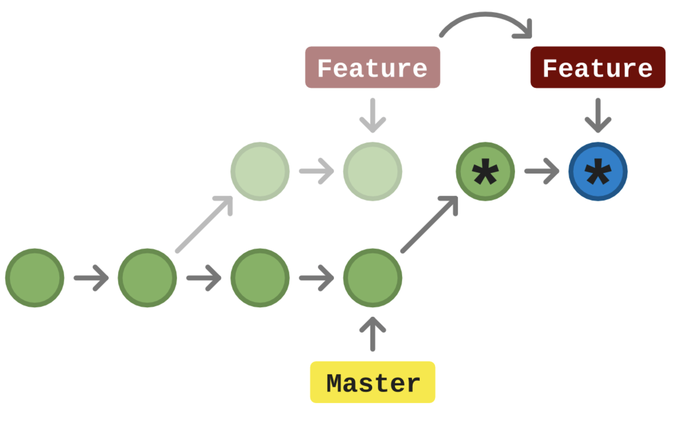

#### What is it?
Git is a file-based key value store
`value` == `data`
`key` == `SHA1` (Hash of the data)
##### SHA1
Crypto hash function that results in a 40 digit hexadecimal number
e.g. `0270e812545a...`
#### Objects
##### Blob
* Compressed file data
* Comes with metadata in following format:
```
blob {file-size}\0{file-contents}
```
* Blobs (and other objects) can be inspected with the `git cat-file` command
##### Tree
* Points to another tree or a blob, could be used to generate the file structure of a project
* A tree object can represent:
* A specific file when pointing to a blob (exec state, file name, blob SHA1)
* Another tree when representing a file path
##### Commit
* Points to a `tree` (current snapshot of project during time of commit)
* Contains metadata
* Author
* Committer
* Commit Message
* Parent commit (one or more for merges)
### Git Areas
#### Working Area
* Files or changes that are untracked (not yet handled by git)
#### Staging Area
* Files to be included in the next commit
#### The Repository
* Everything being managed by Git
* Files
* Directories
### References
* HEAD
* Branches (`master`, `develop`, etc)
* Tags
#### HEAD
A reference to the branch (or commit) that git is currently in.
* `HEAD` can point to a commit when it enters headless (or detached HEAD) state
* Commits made in detached head will be garbage collected if not applied to a branch
#### Branch
* A named pointer that changes with every new commit to the same branch
* Uses `HEAD` to determine next commit's parent
#### Tag
* Pointer to the current `HEAD`
* Acts as a "Screenshot" for your codebase, it never changes.
### Useful Commands
* Create annotated tag:
```
git tag -a -m "<message>"
````
* Show tags:
```
git tag
```
* Create new branch:
```
git checkout -b <branch-name>
```
### Merging
* Applying all changes of a given branch into another.
### Rebasing
* Iteratively applying each commit of a branch on top of another

#### Common Rebase
* Rebases every commit onto a target branch
```
git rebase master
```
#### Interactive Rebase
* Allows used to select what to do with each commit
```
git rebase -i master
```
Main options include: pick (default), edit, squash, drop
### Cherry-pick
* Select a single commit from another branch to apply on top of `HEAD`
```
git cherry-pick <commit-sha1>
```
### Destructive Actions
* Actions that may change and erase git history
* Force push (overrides changes in remote)
```
git push -f origin master
```
* Hard reset (resets `HEAD` to match a desired reference)
```
git reset --hard <branch-name>
```